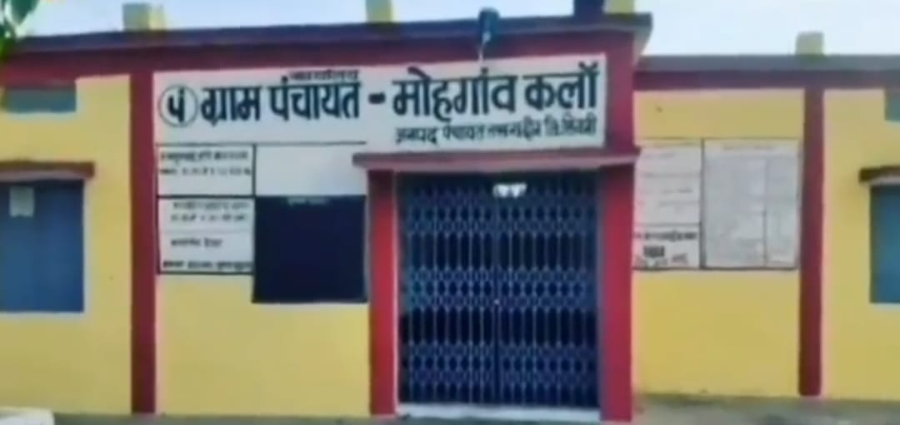

हमारे गाँव का मुख्य प्राथमिक विद्यालय शिक्षा के क्षेत्र में एक अहम स्थान रखता है। यह विद्यालय गाँव के मध्य भाग में स्थित है, जिससे अधिकतर बच्चों के लिए यहाँ आना सरल और सुविधाजनक होता है। यह विद्यालय केवल एक शैक्षणिक संस्था नहीं है, बल्कि यह बच्चों के सर्वांगीण विकास, सामाजिक चेतना और नैतिक मूल्यों के निर्माण की नींव है।
विद्यालय में कक्षा 1 से 5 तक की शिक्षा दी जाती है। यहाँ पढ़ने वाले छात्र-छात्राएँ प्रारंभिक स्तर से ही अनुशासन, समयबद्धता, स्वच्छता और सामाजिक व्यवहार जैसे गुणों को सीखते हैं। अध्यापकगण बच्चों को केवल किताबी ज्ञान नहीं देते, बल्कि उन्हें व्यवहारिक ज्ञान भी देते हैं जिससे वे जीवन में आत्मनिर्भर बन सकें।
विद्यालय में रोजाना की शुरुआत प्रार्थना सभा से होती है, जहाँ बच्चे राष्ट्रगान, सुविचार, और योगाभ्यास करते हैं। यह न सिर्फ बच्चों में देशभक्ति की भावना जगाता है, बल्कि उन्हें मानसिक और शारीरिक रूप से मजबूत भी बनाता है। विद्यालय परिसर में स्वच्छता बनाए रखने पर विशेष ध्यान दिया जाता है और बच्चों को भी स्वच्छ रहने की आदत डाली जाती है।
शिक्षा के साथ-साथ बच्चों को नैतिकता की शिक्षा दी जाती है। उन्हें यह सिखाया जाता है कि जीवन में ईमानदारी, सच्चाई, करुणा और परोपकार कितने महत्वपूर्ण हैं। शिक्षकगण बच्चों के साथ मित्रवत व्यवहार रखते हैं जिससे वे खुलकर अपने विचार साझा कर सकें।
विद्यालय में समय-समय पर बालसभा, कविता पाठ, चित्रकला, खेलकूद प्रतियोगिताएँ, और सांस्कृतिक कार्यक्रम आयोजित किए जाते हैं। इन गतिविधियों से बच्चों का आत्मविश्वास बढ़ता है और वे अपने अंदर छिपी प्रतिभाओं को पहचानने लगते हैं।
सरकार द्वारा संचालित मध्याह्न भोजन योजना (Mid-Day Meal) इस विद्यालय में भी सुचारू रूप से लागू की गई है। बच्चों को रोज़ाना गरम और पौष्टिक भोजन दिया जाता है, जिससे उनकी पोषण स्थिति बेहतर बनी रहती है और उनकी उपस्थिति भी नियमित रहती है। साथ ही सभी बच्चों को निःशुल्क गणवेश, पुस्तकें और स्टेशनरी उपलब्ध कराई जाती है, जिससे आर्थिक रूप से कमजोर वर्ग के बच्चों को भी शिक्षा का पूरा लाभ मिल सके।
विद्यालय भवन में पर्याप्त कक्षाएं हैं और हाल ही में दीवारों पर शैक्षणिक चित्र बनाकर वातावरण को और भी प्रेरणादायक बनाया गया है। कक्षा-कक्षों में पंखों, ब्लैकबोर्ड और शिक्षण सामग्री की उचित व्यवस्था है। पेयजल की सुविधा के साथ-साथ लड़के और लड़कियों के लिए अलग शौचालयों की व्यवस्था भी की गई है, जिससे बच्चों को किसी भी प्रकार की असुविधा का सामना न करना पड़े।
विद्यालय के शिक्षकगण पूरी मेहनत, लगन और समर्पण से बच्चों को शिक्षित करते हैं। वे नियमित प्रशिक्षण लेते हैं ताकि वे नई शिक्षण पद्धतियों को अपनाकर बच्चों को अधिक प्रभावी ढंग से पढ़ा सकें। विद्यालय में बच्चों के मूल्यांकन हेतु समय-समय पर परीक्षाएँ आयोजित की जाती हैं और अभिभावकों को बच्चों की प्रगति की जानकारी दी जाती है।
यह विद्यालय केवल शिक्षा का केंद्र नहीं है, बल्कि गाँव के सामाजिक जीवन का भी हिस्सा है। ग्राम पंचायत, अभिभावकों और स्थानीय समुदाय का सहयोग इस विद्यालय की सफलता में अहम भूमिका निभाता है। अभिभावक-शिक्षक बैठकें नियमित रूप से आयोजित होती हैं, जिसमें बच्चों की पढ़ाई, व्यवहार, और जरूरतों पर चर्चा होती है।
इस विद्यालय ने अब तक कई ऐसे छात्र-छात्राएँ दिए हैं जिन्होंने आगे चलकर उच्च शिक्षा प्राप्त की है और विभिन्न क्षेत्रों में गाँव का नाम रोशन किया है। ऐसे बच्चों को विद्यालय में सम्मानित भी किया जाता है जिससे बाकी बच्चों को प्रेरणा मिलती है।
प्राथमिक विद्यालय (मुख्य मोहगांव कलॉ) गाँव के बच्चों के भविष्य की नींव रख रहा है। यह विद्यालय न केवल शिक्षा प्रदान कर रहा है, बल्कि सामाजिक बदलाव और उन्नति का माध्यम भी बन रहा है। आज जब देश में शिक्षा का स्तर ऊँचा उठाने की बात हो रही है, तब हमारे गाँव का यह विद्यालय एक सशक्त उदाहरण बनकर उभर रहा है।
ग्रामवासियों को इस विद्यालय पर गर्व है और वे इसके विकास में निरंतर सहयोग करते हैं। चाहे भवन निर्माण का काम हो, या किसी विशेष कार्यक्रम की तैयारी — गाँव के लोग हर बार साथ देते हैं।
हमारे गाँव मोहगांव कलॉ के टोलाहार मोहल्ले में स्थित यह प्राथमिक विद्यालय, शिक्षा का एक सशक्त केंद्र है जो कक्षा 1 से 5 तक के बच्चों को शिक्षा प्रदान करता है। यह विद्यालय ग्रामीण बच्चों को प्रारंभिक शिक्षा देने के साथ-साथ उनमें अनुशासन, स्वच्छता और नैतिक मूल्यों की भी शिक्षा देता है।
विद्यालय का वातावरण शांत, स्वच्छ और बच्चों के अनुकूल है। यहाँ पढ़ाई के अलावा अनेक सह-शैक्षणिक गतिविधियाँ करवाई जाती हैं जैसे योग, चित्रकला, कहानी वाचन और बालसभा, जो बच्चों के सर्वांगीण विकास में सहायक होती हैं। शिक्षकों का व्यवहार मित्रवत और प्रेरणादायक है जिससे विद्यार्थी आत्मविश्वास के साथ सीखने की प्रक्रिया में भाग लेते हैं।
विद्यालय में राज्य सरकार की योजनाओं के अंतर्गत मध्याह्न भोजन (Mid-Day Meal), निःशुल्क गणवेश, पाठ्यपुस्तकें और आवश्यक स्टेशनरी उपलब्ध करवाई जाती है। इससे गरीब और जरूरतमंद परिवारों को शिक्षा के क्षेत्र में प्रोत्साहन मिलता है।
माध्यमिक विद्यालय मोहगांव कलॉ गाँव का एक प्रमुख शैक्षणिक संस्थान है, जहाँ कक्षा 6 से 8 तक की शिक्षा प्रदान की जाती है। यह विद्यालय उन बच्चों के लिए एक महत्वपूर्ण स्थान है जिन्होंने प्राथमिक शिक्षा पूरी कर ली है और अब उच्च स्तर की पढ़ाई के लिए तैयार हैं।